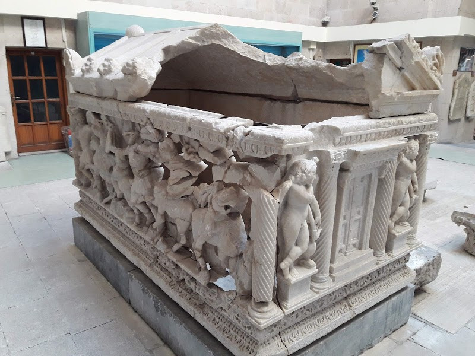
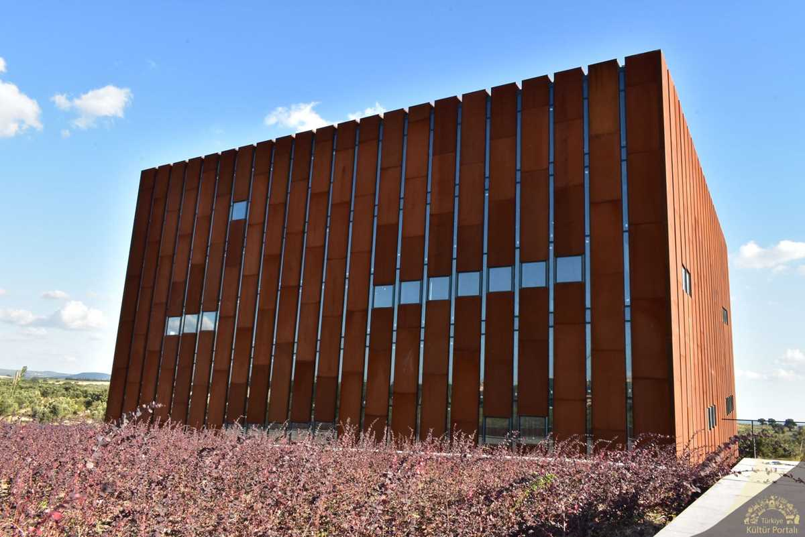

Çanakkale Kültürel Yerler
Tarihin Kalbinin Attığı Şehrin Kültürel Mirası
Müzeler

Çanakkale Arkeoloji Müzesi
Bölgenin zengin arkeolojik eserlerini sergileyen müze.

Troya Müzesi
Troya antik kentinden çıkarılan eserlerin sergilendiği modern müze.
Tarihi Yapılar
Troya Antik Kenti
UNESCO Dünya Mirası Listesi'nde yer alan efsanevi antik kent.

Assos Antik Kenti
Antik dönemin önemli liman kenti ve felsefe merkezi.
Gelibolu Yarımadası
Çanakkale Savaşları'nın yaşandığı tarihi yarımada.
Tarihi Camiler
Ulu Cami
Osmanlı döneminden kalma şehrin en büyük camisi.
Hıdırlık Cami
Tarihi önemi olan Osmanlı dönemi camisi.